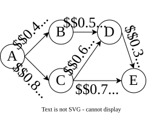

Modelizing Probabilistic Graph
Let \( G = (V, E) \) be a graph (undirected or directed) such that each edge \( e \in E \) is present in the graph with a probability \( p(e) \). Given a source \( s \) and a target \( t \) the goal is to compute the probability that \( s \) and \( t \) are connected. Below is an example of such graph, with five nodes and a query would be to compute the probability that \( A \) and \( E \) are connected. Our encoding is the same as the one presentend in [1] except for the distribution. Notice that the encoding also works for undirected graphs.

The Variables
One distribution is defined for each edge \( e \in E \) with \( D_e = \theta_{e}, \theta_{\lnot e} \) representing, respectively, that the edge is present or not. In addition to that, each node \(v \in V \) has an associated deterministic variable \( \lambda_{v} \) that is true if the node \( v \) is reachable from the source, given the choices on the edge variables.
The Clauses
The encoding uses the transitivity property of the graph: If a node \(v_1 \in V \) is reachable from the source and the edge \( e = (v_1, v_2) \in E \) is present, then \(v_2\) is reachable from the source. That means that for every edge \(e = (v_1, v_2) \in E\), there is a clause \[ \lambda_{v_1} \land \theta_{e} \implies \lambda_{v_2} \]
The Query
The query is encoded by imposing the fact that the source \( s \) is reachable from the source, and the target \( t \) is not: \( \lambda_{s} \) and \( \lnot \lambda_{t} \).
Example
The encoding (in DIMACS-style format) is show below for the query \( P(A \text{ connected to } E) \).
p cnf 26 19
c Edge from A to B with variables 1 2
c p distribution 0.4 0.6
c Edge from A to C with variables 3 4
c p distribution 0.8 0.2
c Edge from B to D with variables 5 6
c p distribution 0.5 0.5
c Edge from C to D with variables 7 8
c p distribution 0.6 0.4
c Edge from C to E with variables 9 10
c p distribution 0.7 0.3
c Edge from D to E with variables 11 12
c p distribution 0.3 0.7
c Deterministic variables: Node A 13 Node B 14 node C 15 Node D 16 Node E 17
-13 -1 14 0
-13 -3 15 0
-14 -5 16 0
-15 -7 16 0
-15 -9 17 0
-16 -11 17 0
c Query
13 0
-17 0
References
[1] Leonardo Duenas-Osorio, Kuldeep Meel, Roger Paredes, and Moshe Vardi. Counting-based reliability estimation for power-transmission grids. In Proceedings of the AAAI Conference on Artificial Intelligence, 2017.